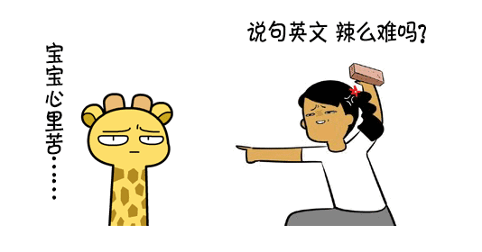
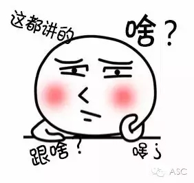

互惠动态
|
|
那些年陪孩子补习英语的辛酸史（是不是读完标题就哭了？）
如果世界上有一个词语不咬牙切齿地说出来不足以发泄情感的话，那么对于大多数中国学生和家长而言，这个词一定是——英语。
我们以“世界上最难学习的语言”汉语为母语，却为另一种语言焦头烂额着……
为了让孩子学好英语，一个光荣神圣而不发薪水的岗位诞生了——陪读家长。
全职主妇丫丫妈在女儿丫丫5岁时光荣地“上岗”了。
上了补习班，丫丫妈发现，原来不论是全职妈妈还是上班族家长，只要一到节假日，“加班”那是必然的。接送、背包、蹲点、买吃的是基本功，还要治得了宝宝的“厌课综合征”“补课小情绪”。一旦宝宝上课表现不佳，还得老脸一红挺过去。
“上英语课的妈妈好吓人！”已经6岁的丫丫这样说。
平时丫丫妈很温柔，也常教育丫丫要懂得分享、友爱谦让、举止优雅，可是一上英语课，陪读的妈妈就像变身了。如果腼腆的丫丫发言少了，妈妈会在下课后甚至课间狠狠批评丫丫，警告她不要管别人，必须多说、抢着说。
其实丫丫妈也很无奈：“最近凑了四五个孩子，掏了不少钱请一名外教，丫丫不张口说英文，咱不是光给别人家孩子摊学费了？”

表面上看，陪孩子补课的家长都老老实实坐在教室后面，其实状态可是大不同，基本可分四种境界：
废柴壁纸级——发呆望天刷手机，注意力长期掉线，课堂情况充耳不闻，只具备“看堆儿”的基本技能；
地主监工级——自己“不学无术”，但孩子溜号却能明察秋毫；
伴读学童级——放低姿态，勤学善思，老实听课、记笔记，孩子学啥他学啥；
人肉录像级——有颗为师之心的业余表演系高材生，上课不是学英文而是学老师。老师讲了什么，怎么讲的力争记牢，回头声情并茂地“回放”给孩子，基本做到哪里不会演哪里。
丫丫妈说自己现在只修炼到“地主监工级”，也认识不少修为极高的“大神”家长，为了更完美地协助孩子学习，再难也得继续往上爬。

“今天我下定决心把秀秀妈屏蔽了！”丫丫妈挥着手机说。
补课之初，一起陪上英语班的妈妈们曾建立一个微信群，本来一群妈妈聚在一起，上课相互帮助，下课串串笔记，平时在群里聊聊家庭教育，和谐得不要不要的。可是谁知，后来不论是英语课上还是群里都慢慢变了味。
原来总有些家长把人际交往当秀场，隔三差五秀老公旅行，秀香水鞋包，秀车子房子，秀孩子成绩，秀秀妈就是这样的家长。
本来孩子们在英语课上齐头并进、收获友谊是好事，可是好事妈妈的场外较劲着实让丫丫妈心累。
一群孩子在一处上英语课最膈应什么？
是突然有家长带孩子退班，走前还甩下一句话——
“他们教材太旧”；
“这个老师教得不如我们要去的那个班好”；
“那个班级的教学方法和进度更适合我家孩子”；
……
秀秀妈退班前的台词更让丫丫妈心塞：“懂点儿教育的家长，谁还让孩子在这儿学啊？”
虽然爱秀的秀秀妈走了，可是不少剩下的家长都变得摇摆不定了。秀秀妈说的是真的吗？我们的选择究竟对不对？
丫丫妈多少有点儿无奈地说，听说所谓选择恐惧症归根结底不过是因为穷。拿孩子学英语来说吧，我们想为孩子创造的最理想的英语学习环境无非是，把孩子送到国外，有一个不得不说英语的环境。但这一切都要以雄厚的经济条件作为后盾，我们没有，况且孩子还小，也不放心把孩子一个人送到国外生活，所以才在退而求其次的过程中瞻前顾后、患得患失。
听丫丫妈说出这番话，ASC互惠生中心并不赞同，谁说创造最理想的英语学习条件一定需要大把的金钱？一定要把孩子送到国外？......
请个洋哥哥/洋姐姐互惠生到您家，全天候陪伴孩子，营造一个不得不说英语的环境。外国互惠生还可以帮助家庭接送小孩上下学、照顾小孩、陪小孩玩耍、辅导小孩英文、做简单家务等。而这些并不需要花费很多，同样可以达到理想效果。

关于互惠，您了解得够多么？
请外国学生来家庭照顾孩子，辅导孩子外语？
只了解这些是不够的！
获取更多信息请参考以下方式：
联系ASC：
电话：86-21-61116069(上海中心）
86-25-66065662（南京中心）
全国家庭均可申请！
手机：15601666586（可加微信）
Q Q：3259637585
微信：asc-center
邮箱：info@asc-center.com
网站：www.asc-aupair.com

感谢您对我们的关注